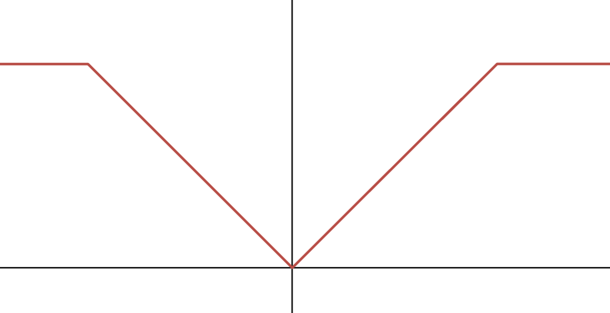
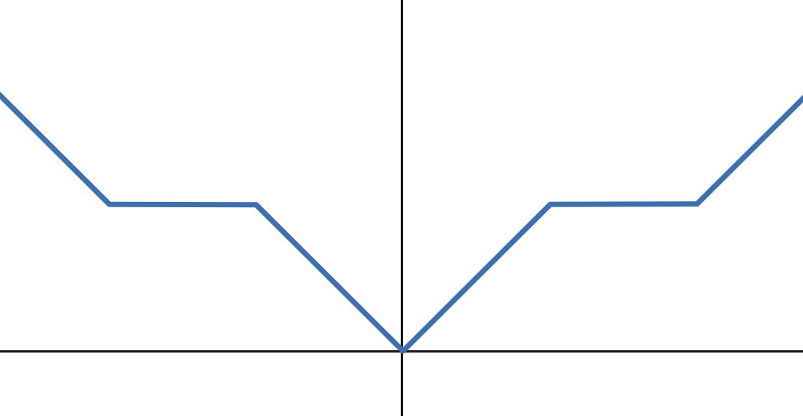

Section 4.4 Non-smooth (Non-convex) Regularized Problems
In this section, we consider the following regularized stochastic compositional optimization:
\[\begin{align} \label{eqn:ch4-ncr-obj} \min_{\mathbf{w}\in\mathbb{R}^d}\bar F(\mathbf{w}):=\mathbb{E}_{\xi}f(\mathbb{E}_{\zeta}[g(\mathbf{w};\zeta)];\xi)+r(\mathbf{w}), \end{align}\]
where \(r\) is a non-smooth regularizer, which is potentially non-convex. This includes constrained problems, where \(r(\mathbf{w})=\mathbb{I}_{0-\infty}(\mathbf{w}\in\mathcal{W})\). For example, the KL-divergence constrained DRO has a constraint \(\tau\geq 0\).
We extend the definition of \(\epsilon\)-stationary solution of a smooth function to the non-smooth composite function by noting that \(\partial(F+r)(\mathbf{w})=\nabla F(\mathbf{w})+\partial r(\mathbf{w})\).
Definition 4.1 (\(\epsilon\)-stationary
solution).
A solution \(\mathbf{w}\) is called an
\(\epsilon\)-stationary solution to
\(\min_{\mathbf{w}\in\mathbb{R}^d}F(\mathbf{w})+r(\mathbf{w})\)
where \(F\) is smooth and \(r\) is non-differentiable, if \(\text{dist}(0,\nabla F(\mathbf{w})+\partial
r(\mathbf{w}))\leq \epsilon\).
To handle non-smoothness of \(r\), we assume the proximal mapping of \(r\) is simple to compute:
\[\begin{align*} \operatorname{prox}_r(\hat{\mathbf{w}})=\arg\min_{\mathbf{w}\in\mathbb{R}^d}\frac{1}{2}\|\mathbf{w}-\hat{\mathbf{w}}\|_2^2+r(\mathbf{w}). \end{align*}\]
Below, we give some examples of non-convex regularizers and their proximal mappings, whose derivations are left as exercises for interested readers.

(a) Capped $\ell_1$-norm

(b) Non-convex PAR
Examples
Example 4.4: Capped \(\ell_1\)-norm
It is defined as \(r(\mathbf{w})=\lambda\sum_{i=1}^d\psi(w_i)\), where \(\psi(w_i)=\min(|w_i|,\theta)\) (cf. Figure 4.1(a)). It penalizes small coefficients heavily (encouraging sparsity) but stops penalizing once coefficients are large enough. It was shown to reduce the bias issue of LASSO, which cannot exactly recover the non-zero coefficients under some conditions. Its proximal mapping can be evaluated element-wise by applying the proximal operator of \(\psi\) to each component: \[\begin{align} \operatorname{prox}_{\lambda \psi}(u)= \begin{cases} x_1=\min(\operatorname{sign}(u)(|u|-\lambda)_+,\theta)& \text{if } h(x_1;u)<h(x_2;u) \\ x_2=\max(|u|,\theta) & \text{otherwise}, \end{cases} \end{align}\]
where \(h(x;u)=\frac{1}{2}(x-u)^2+\lambda\min(|x|,\theta)\). Similar non-convex sparse regularizers include minimax concave penalty (MCP) and Smoothly Clipped Absolute Deviation (SCAD).
Example 4.5: Nonconvex Piecewise Affine Regularization (PAR)
A nonconvex PAR is defined as \(r(\mathbf{w})=\lambda\sum_{i=1}^d \psi(w_i)\) (cf Figure 4.1(b)), where
\[\begin{equation} \label{eq:24} \psi(x)= \begin{cases} |x|-kq & \text{if } kq\leq |x|\leq \frac{2k+1}{2}q, \\ \frac{k+1}{2}q & \text{if } \frac{2k+1}{2}q\leq |x|\leq (k+1)q, \end{cases} \quad k=0,1,\ldots, \end{equation}\]
Its proximal mapping is defined as:
- When the regularization strength \(\lambda\leq q\), we have
\[\begin{equation} \label{eq:25} \operatorname{prox}_{\lambda \psi}(u)= \begin{cases} \operatorname{sign}(u)kq & \text{if } kq\leq |u|\leq kq+\lambda, \\ \operatorname{sign}(u)(|u|-\lambda) & \text{if } kq+\lambda\leq |u|\leq \frac{2k+1}{2}q+\frac{\lambda}{2}, \\ \operatorname{sign}(u)|u| & \text{if } \frac{2k+1}{2}q+\frac{\lambda}{2}\leq |u|\leq (k+1)q. \end{cases} \end{equation}\]
- When the regularization strength \(\lambda\geq q\), we have
\[\begin{equation} \label{eq:26} \operatorname{prox}_{\lambda \psi}(u)=\operatorname{sign}(u)\left\lfloor \frac{|u|-\frac{\lambda}{2}}{q} \right\rceil q. \end{equation}\]
where \(\lfloor\cdot\rceil\) denotes the nearest integer. When \(\lambda\) exceeds a certain threshold (e.g., \(\lambda\geq q\)), the proximal operator becomes a hard quantizer, mapping inputs exactly to discrete levels in a quantization set \(Q=\{0,\pm q,\pm 2q,\pm 3q,\ldots\}\).
Algorithms
We can easily extend SCMA and SCST to solving the non-smooth regularized SCO problems using the following update:
\[\begin{align} \label{eqn:spgd-co} \mathbf{w}_{t+1}=\arg\min \frac{1}{2\eta_t}\|\mathbf{w}-(\mathbf{w}_t-\eta_t\mathbf{v}_{t})\|_2^2+r(\mathbf{w}), \end{align}\]
where \(\mathbf{v}_{t}\) is the MA or STORM gradient estimator as in SCMA or SCST.
Convergence Analysis
We first present a lemma similar to Lemma 4.9.
Lemma 4.16
Consider the update in (\(\ref{eqn:spgd-co}\)), if \(\eta_t\leq \frac{1}{4L_F}\) then we have
\[\begin{align*} \bar F(\mathbf{w}_t)-\bar F(\mathbf{w}_{t+1})\leq& \eta_t\|\mathbf{v}_{t}-\nabla F(\mathbf{w}_t)\|_2^2-\frac{\eta_t}{10}\text{dist}(0,\partial \bar F(\mathbf{w}_{t+1}))^2-\frac{1}{80\eta_t}\|\mathbf{w}_{t+1}-\mathbf{w}_t\|_2^2. \end{align*}\]
Proof
Recall the update of \(\mathbf{w}_{t+1}\):
\[\begin{align*} \mathbf{w}_{t+1}\in \arg\min_{\mathbf{w}\in\mathbb{R}^d}\left\{r(\mathbf{w})+\frac{1}{2\eta_t}\|\mathbf{w}-(\mathbf{w}_t-\eta_t\mathbf{v}_{t})\|_2^2\right\}. \end{align*}\]
Then following variational analysis, we have
\[\begin{align*} -\mathbf{v}_{t}-\frac{1}{\eta_t}(\mathbf{w}_{t+1}-\mathbf{w}_t)\in\partial r(\mathbf{w}_{t+1}), \end{align*}\]
which implies that
\[\begin{align} \label{proxSG:ineq1} \nabla F(\mathbf{w}_{t+1})-\mathbf{v}_{t}-\frac{1}{\eta_t}(\mathbf{w}_{t+1}-\mathbf{w}_t)\in \nabla F(\mathbf{w}_{t+1})+\partial r(\mathbf{w}_{t+1})=\partial \bar F(\mathbf{w}_{t+1}). \end{align}\]
Hence, we have
\[\begin{align} \label{eqn:distG} \text{dist}(0,\partial \bar F(\mathbf{w}_{t+1}))^2\leq \|\nabla F(\mathbf{w}_{t+1})-\mathbf{v}_{t}-\frac{1}{\eta_t}(\mathbf{w}_{t+1}-\mathbf{w}_t)\|_2^2. \end{align}\]
Due to the update of \(\mathbf{w}_{t+1}\), we also have
\[\begin{align} \label{proxSG:ineq2} r(\mathbf{w}_{t+1})+\langle \mathbf{v}_{t},\mathbf{w}_{t+1}-\mathbf{w}_t\rangle+\frac{1}{2\eta_t}\|\mathbf{w}_{t+1}-\mathbf{w}_t\|_2^2 \leq r(\mathbf{w}_t). \end{align}\]
Since \(F(\mathbf{w})\) is smooth with parameter \(L_F\), then
\[\begin{align} \label{proxSG:ineq3} F(\mathbf{w}_{t+1})\leq F(\mathbf{w}_t)+\langle \nabla F(\mathbf{w}_t),\mathbf{w}_{t+1}-\mathbf{w}_t\rangle+\frac{L_F}{2}\|\mathbf{w}_{t+1}-\mathbf{w}_t\|_2^2. \end{align}\]
Combining these two inequalities (\(\ref{proxSG:ineq2}\)) and (\(\ref{proxSG:ineq3}\)) we get
\[\begin{align*} &\bar F(\mathbf{w}_{t+1})+\langle \mathbf{v}_{t}-\nabla F(\mathbf{w}_{t}),\mathbf{w}_{t+1}-\mathbf{w}_t\rangle\leq \bar F(\mathbf{w}_t)-\left(\frac{1}{2\eta_t}-\frac{L_F}{2}\right)\|\mathbf{w}_{t+1}-\mathbf{w}_t\|_2^2. \end{align*}\]
From the above inequality, we obtain two results. The first result is
\[\begin{align} &\frac{2}{\eta_t}\langle \mathbf{v}_{t}-\nabla F(\mathbf{w}_{t+1}),\mathbf{w}_{t+1}-\mathbf{w}_t\rangle \notag\\ &\leq \frac{2(\bar F(\mathbf{w}_t)-\bar F(\mathbf{w}_{t+1}))}{\eta_t}-\frac{1}{\eta_t}\left(\frac{1}{\eta_t}-L_F\right)\|\mathbf{w}_{t+1}-\mathbf{w}_t\|_2^2 \notag\\ &\quad +\frac{2}{\eta_t}\langle \nabla F(\mathbf{w}_t)-\nabla F(\mathbf{w}_{t+1}),\mathbf{w}_{t+1}-\mathbf{w}_t\rangle \notag\\ &\leq \frac{2(\bar F(\mathbf{w}_t)-\bar F(\mathbf{w}_{t+1}))}{\eta_t}-\frac{1}{\eta_t}\left(\frac{1}{\eta_t}-3L_F\right)\|\mathbf{w}_{t+1}-\mathbf{w}_t\|_2^2,\label{eqn:cross} \end{align}\] where the last inequality follows the smoothness of \(F\) by bounding: \(\langle \nabla F(\mathbf w_t)-\nabla F(\mathbf w_{t+1}), \mathbf w_{t+1}-\mathbf w_t\rangle\leq \|\nabla F(\mathbf w_t)-\nabla F(\mathbf w_{t+1})\|_2\| \mathbf w_{t+1}-\mathbf w_t\|_2\leq L_F\| \mathbf w_{t+1}-\mathbf w_t\|_2^2\).
The second result is
\[\begin{align*} &\left(\frac{1}{2\eta_t}-\frac{L_F}{2}\right)\|\mathbf{w}_{t+1}-\mathbf{w}_t\|_2^2\\ &\leq \bar F(\mathbf{w}_t)-\bar F(\mathbf{w}_{t+1})+\langle \nabla F(\mathbf{w}_t)-\mathbf{v}_{t},\mathbf{w}_{t+1}-\mathbf{w}_t\rangle \notag\\ &= \bar F(\mathbf{w}_t)-\bar F(\mathbf{w}_{t+1})+\eta_t\|\nabla F(\mathbf{w}_t)-\mathbf{v}_{t}\|_2^2+\frac{1}{4\eta_t}\|\mathbf{w}_{t+1}-\mathbf{w}_t\|_2^2. \end{align*}\]
If \(\frac{L_F}{2}\leq \frac{1}{8\eta_t}\), i.e., \(\eta_t\leq \frac{1}{4L_F}\), the above inequality indicates:
\[\begin{align} \label{proxSG:ineq4} \frac{1}{8\eta_t}\|\mathbf{w}_{t+1}-\mathbf{w}_t\|_2^2\leq \bar F(\mathbf{w}_t)-\bar F(\mathbf{w}_{t+1})+\eta_t\|\nabla F(\mathbf{w}_t)-\mathbf{v}_{t}\|_2^2. \end{align}\]
To proceed, we have
\[\begin{align*} &\|\mathbf{v}_{t}-\nabla F(\mathbf{w}_{t+1})+\frac{1}{\eta_t}(\mathbf{w}_{t+1}-\mathbf{w}_t)\|_2^2\\ &=2\left\langle \mathbf{v}_{t}-\nabla F(\mathbf{w}_{t+1}),\frac{1}{\eta_t}(\mathbf{w}_{t+1}-\mathbf{w}_t)\right\rangle+\|\mathbf{v}_{t}-\nabla F(\mathbf{w}_{t+1})\|_2^2+\frac{1}{\eta_t^2}\|\mathbf{w}_{t+1}-\mathbf{w}_t\|_2^2.\notag \end{align*}\]
Adding the above inequality to (\(\ref{eqn:cross}\)) we have
\[\begin{align*} &\|\mathbf{v}_{t}-\nabla F(\mathbf{w}_{t+1})+\frac{1}{\eta_t}(\mathbf{w}_{t+1}-\mathbf{w}_t)\|_2^2\\ &\leq \frac{2(\bar F(\mathbf{w}_t)-\bar F(\mathbf{w}_{t+1}))}{\eta_t}-\frac{1}{\eta_t}\left(\frac{1}{\eta_t}-3L_F\right)\|\mathbf{w}_{t+1}-\mathbf{w}_t\|_2^2\\ &\quad +\|\mathbf{v}_{t}-\nabla F(\mathbf{w}_{t+1})\|_2^2+\frac{1}{\eta_t^2}\|\mathbf{w}_{t+1}-\mathbf{w}_t\|_2^2\\ &=\frac{2(\bar F(\mathbf{w}_t)-\bar F(\mathbf{w}_{t+1}))}{\eta_t}+\frac{3L_F}{\eta_t}\|\mathbf{w}_{t+1}-\mathbf{w}_t\|_2^2+\|\mathbf{v}_{t}-\nabla F(\mathbf{w}_{t+1})\|_2^2. \end{align*}\]
Since
\[\begin{align*} \|\mathbf{v}_{t}-\nabla F(\mathbf{w}_{t+1})\|_2^2 &=\|\mathbf{v}_{t}-\nabla F(\mathbf{w}_{t})+\nabla F(\mathbf{w}_{t})-\nabla F(\mathbf{w}_{t+1})\|_2^2\\ &\leq 2\|\mathbf{v}_{t}-\nabla F(\mathbf{w}_{t})\|_2^2+2\|\nabla F(\mathbf{w}_{t})-\nabla F(\mathbf{w}_{t+1})\|_2^2\\ &\leq 2\|\mathbf{v}_{t}-\nabla F(\mathbf{w}_{t})\|_2^2+2L_F^2\|\mathbf{w}_{t}-\mathbf{w}_{t+1}\|_2^2. \end{align*}\]
Due to \(2L_F^2\leq \frac{L_F}{2\eta_t}\), we have
\[\begin{align*} &\|\mathbf{v}_{t}-\nabla F(\mathbf{w}_{t+1})+\frac{1}{\eta_t}(\mathbf{w}_{t+1}-\mathbf{w}_t)\|_2^2\\ &\leq \frac{2(\bar F(\mathbf{w}_t)-\bar F(\mathbf{w}_{t+1}))}{\eta_t}+\frac{3.5L_F}{\eta_t}\|\mathbf{w}_{t+1}-\mathbf{w}_t\|_2^2+2\|\mathbf{v}_{t}-\nabla F(\mathbf{w}_{t})\|_2^2. \end{align*}\]
Multiplying both sides by \(\eta_t\), we have
\[\begin{align*} &\eta_t\|\mathbf{v}_{t}-\nabla F(\mathbf{w}_{t+1})+\frac{1}{\eta_t}(\mathbf{w}_{t+1}-\mathbf{w}_t)\|_2^2\\ &\leq 2(\bar F(\mathbf{w}_t)-\bar F(\mathbf{w}_{t+1}))+3.5L_F\|\mathbf{w}_{t+1}-\mathbf{w}_t\|_2^2+2\eta_t\|\mathbf{v}_{t}-\nabla F(\mathbf{w}_{t})\|_2^2. \end{align*}\]
Adding this inequality to (\(\ref{proxSG:ineq4}\)) gives
\[\begin{align*} &\eta_t\|\mathbf{v}_{t}-\nabla F(\mathbf{w}_{t+1})+\frac{1}{\eta_t}(\mathbf{w}_{t+1}-\mathbf{w}_t)\|_2^2+\frac{1}{8\eta_t}\|\mathbf{w}_{t+1}-\mathbf{w}_t\|_2^2\\ &\leq 3(\bar F(\mathbf{w}_t)-\bar F(\mathbf{w}_{t+1}))+3\eta_t\|\mathbf{v}_{t}-\nabla F(\mathbf{w}_{t})\|_2^2+3.5L_F\|\mathbf{w}_{t+1}-\mathbf{w}_t\|_2^2. \end{align*}\]
Applying (\(\ref{proxSG:ineq4}\)) again to the RHS, we have
\[\begin{align*} &\eta_t\|\mathbf{v}_{t}-\nabla F(\mathbf{w}_{t+1})+\frac{1}{\eta_t}(\mathbf{w}_{t+1}-\mathbf{w}_t)\|_2^2+\frac{1}{8\eta_t}\|\mathbf{w}_{t+1}-\mathbf{w}_t\|_2^2\\ &\leq (3+28L_F\eta_t)(\bar F(\mathbf{w}_t)-\bar F(\mathbf{w}_{t+1}))+(3\eta_t+28\eta_t^2L_F)\|\mathbf{v}_{t}-\nabla F(\mathbf{w}_t)\|_2^2\\ &\leq 10(\bar F(\mathbf{w}_t)-\bar F(\mathbf{w}_{t+1}))+10\eta_t\|\mathbf{v}_{t}-\nabla F(\mathbf{w}_t)\|_2^2. \end{align*}\]
Combining this with (\(\ref{eqn:distG}\)), we finish the proof.
■
Since the above lemma resembles that in Lemma 4.9, hence, it remains a simple exercise to derive the complexity of using the MA estimator similar to Theorem 4.3 and of using the STORM estimator similar to Theorem 4.4.
Corollary 4.1
Consider the method (\(\ref{eqn:spgd-co}\)). Under the same assumptions and similar settings as in Theorem 4.3 , the method finds an \(\epsilon\)-stationary solution with a complexity of \(O(1/\epsilon^4)\). Under the same assumptions and similar settings as in Theorem 4.4, the method finds an \(\epsilon\)-stationary solution with a complexity of \(O(1/\epsilon^3)\).
💡 Why it matters
Since standard regularized stochastic optimization \(\mathbb{E}_\zeta[g(\mathbf{w};\zeta)]+r(\mathbf{w})\)
is a special case, the above results directly apply. This corollary
shows that regularized problems can be solved with the same complexities
as unregularized ones by employing either the moving-average gradient
estimator or the STORM gradient estimator. In contrast, without these
estimators, solving non-convex regularized problems requires a large
batch size at every iteration (Lan, 2020)
[Section 6.2.3].